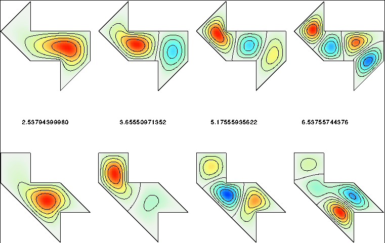

Isospectral Shapes
today i want to explain isospectral shapes. the question at the heart of this is one of the most charming in mathematics: can you hear the shape of a drum?
start with a thin metal plate. clamp its edge so it cannot move. tap it. the plate vibrates and produces sound. the sound is not random. it is built from a collection of basic vibrations, each with its own frequency. together these frequencies form the spectrum of the plate. change the shape of the plate, change the boundary, and you change how waves reflect inside it. this usually changes the spectrum.
different shapes, different sounds. this leads to a natural assumption: if two shapes produce exactly the same spectrum, they must be the same shape.
that assumption is wrong.
there exist geometrically distinct shapes that produce exactly the same set of vibration frequencies. these are called isospectral shapes. iso means same, spectral refers to the spectrum of frequencies. the shapes look different, feel different, and yet a physicist with a perfect microphone, listening to both being struck, could not tell them apart.
mark kac asked this question precisely in his 1966 paper "can one hear the shape of a drum?", and for almost thirty years it remained open. the answer, when it finally came, was no.
in 1992, carolyn gordon, david webb, and scott wolpert constructed an explicit pair of isospectral domains. they are both flat polygons, built by assembling right triangles, and they look like this:

they are clearly not congruent. you cannot rotate or reflect one to get the other. and yet they produce identical spectra.
how do you prove two shapes are isospectral without computing every frequency and checking them one by one? the answer is a technique called transplantation, and it is the genuinely clever part of the story.
the idea is to show that any vibration pattern on one shape can be systematically converted into a vibration pattern on the other shape with the same frequency. if you can do this, and if the conversion is invertible, then the two shapes must share their entire spectrum.
the gordon-webb-wolpert shapes are both assembled from seven copies of the same right triangle. label the triangles on the first shape $1$ through $7$. each triangle on the first shape maps to a combination of triangles on the second shape according to a fixed rule, a matrix of $+1$, $-1$, and $0$ entries that encodes how pieces of the vibration are copied, reflected, and cancelled across the two domains. the rule is constructed so that whenever a wave on the first shape satisfies the boundary condition at an edge, the transplanted wave on the second shape automatically satisfies its own boundary condition at the corresponding edge. the frequency is unchanged because the transplantation is local: it only rearranges and reflects pieces of the wave, never stretching or compressing them.
this is why the spectrum is preserved. the frequencies are determined by how waves fit the boundary, and the transplantation is precisely a certificate that both boundaries enforce the same fitting conditions, just arranged differently in space.
it is worth pausing on what this means mechanically. when a wave moves across the plate, it only reacts to the boundary locally, at the moment of reflection. it has no global memory of the shape. two different boundaries can enforce reflections that are locally distinct but globally equivalent in their effect on which patterns survive. the spectrum is a global invariant, but it is assembled from purely local interactions, and local interactions can be rearranged without changing the result.
so the spectrum does not determine the shape. but it is not useless either. weyl's law tells us that the spectrum does determine the area of the drum, its perimeter, and the number of holes. you can hear quite a lot. just not everything.